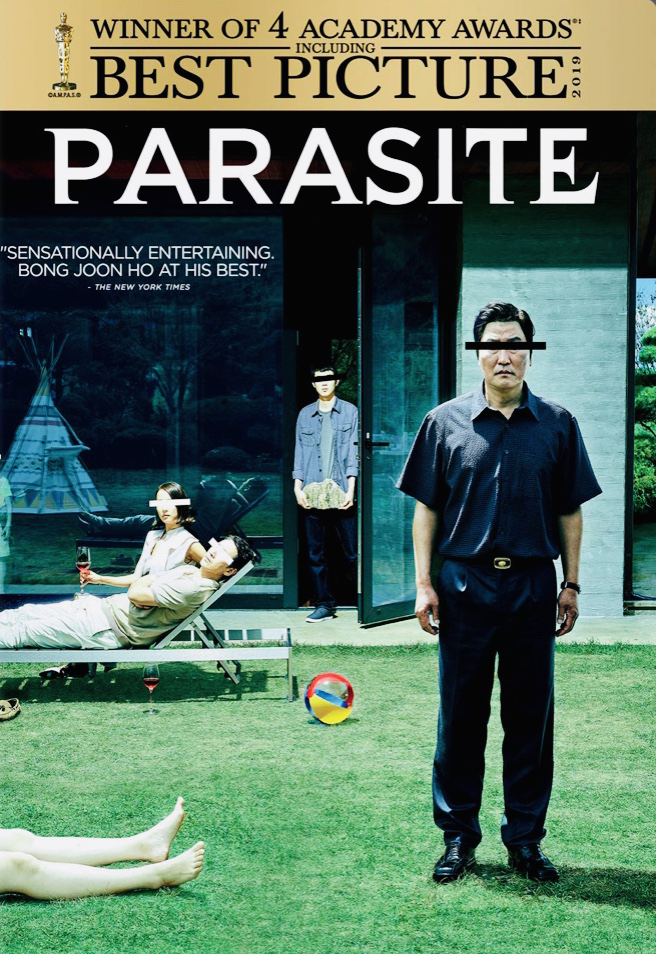
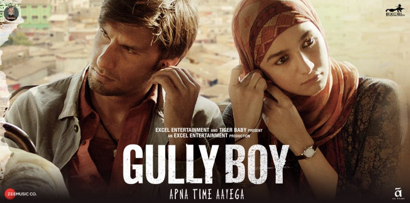
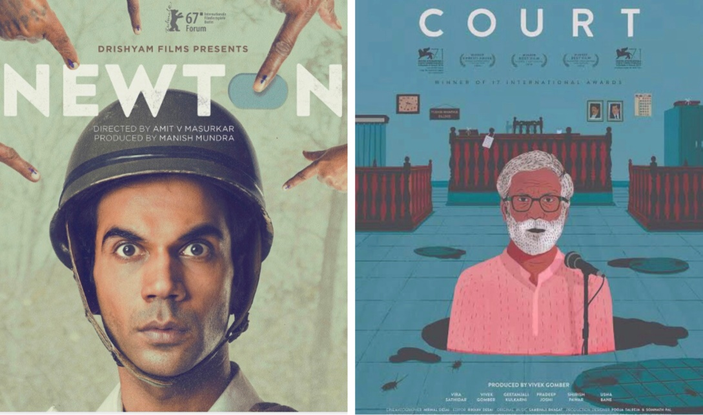

INDIA- A lot yet to be done for OSCARS!!!
A film is a canvas on which an artist paints his art with strokes of love, compassion, hatred, anger, laughter and many more. An artist goes through a lot to decipher his inner zeal onto the screen yet even after
20 years of continuous participation, we as a country are still unable to hit the jackpot...hence resulting into movies like PARASITE to walk off with the crown....not that PARASITE was not a great movie but we
as Hindi cinema is a Pandora box full of talent which has a lot to offer!!
Indian cinema being one of the oldest in this business is now only up to remakes like judwa2, love aaj kal and many songs which are
only deteriorating the quality of our cinema...of course appraisal of a few…….

Is it always about commercializing???
Last year from India, GULLY BOY got an opportunity to participate in the mega event and indisputably won nothing not even recognition...
On contrary had it been
AAMIS (the assamese adaptation of dark cinema) or SUPER DELUX (actually the best tamil movie that was produced last year)….everything was so well made, these films had everything to have made a cut
amazing performances,melodious tunes,spelbinding and thought provoking stories everything was actually made so peculiar that it actually made the audience awestruck….but ofcourse since these wonderful
pieces of art weren’t promoted and not produced by some of the so called elite banners of the country…..they didn’t even stand a chance to be considered for participation….
Not that Gully Boy is a bad story
or the talent lacked….damn sure it was one of the expectional pieces we have till date, having Ranveer’s and Alia’s admirable performances with wonderful dialogues henceforth received
love and warmth in abundance.
Oscars still being the much coveted awards of the year, requires a bit more attention, a bit more intelligence, a bit more purity, honesty, sincerity and again more of ingenuity….

India being the country of storytelling and folks produces largest number of films every year without a fail and still we are lagging behind!
But have you ever tried to give it an ounce of thought,
why is it happening with Hindi cinema? when even a non-English movie won the title of "best movie" at the academy last year?
I think we need to make some amendments in our procedure of selections
Uproarious, Fascinating, Riveting, Gut wrenching and most importantly ORIGINAL movies like TUMBBAD, GANGS OF WASSEYPUR, SHANGHAI, SONCHIRIYA
and lot more not even get to make it to the spot light..
Here, don’t we get that very sense of nepotism? When movies like NEWTON and COURT got their chance to try their luck then what went wrong that Gully Boy which actually followed the
plot of Eminem’s 8 boy could make it to the locus?
A lot has already been said about our Indian cinema….we’ve got some of the finest performances of all time like Mother India, Lagaan.
These stories are not only original but also are the stories of common man…..they actually makes one realize – Never underestimate the power of a common man…..

It’s high time for us to be more punctilious that we judge each production with the same yardstick...of course not the box office collection but the true sense of art and let these
productions go through a number of screenings before letting them have the golden opportunity so that if not the award, at least the nomination is what we get for sure!!